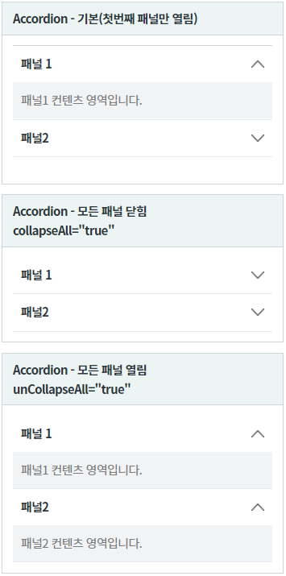
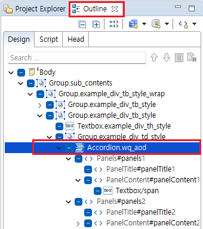
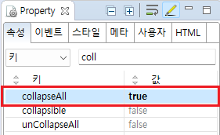
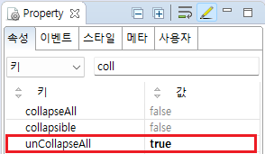
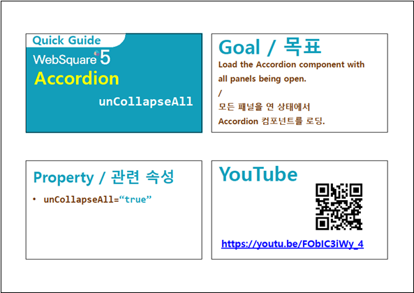

Accordion 컴포넌트를 브라우저에 출력할 때 패널의 초기 상태를 지정하는 예제입니다. 기본 패널 상태는 모든 패널이 닫히고 첫번째 패널만 열리는 것입니다. 속성 collapseAll, unCollapseAll으로 모든 패널 닫힘, 모든 패널 열림을 지정할 수 있습니다.
collapseAll : 모든 패널 닫힘
unCollapseAll : 모든 패널 열림
브라우저에 초기 출력 시 패널의 기본 상태
브라우저에 초기 출력 시 모든 패널을 닫기
브라우저에 초기 출력 시 모든 패널을 열기
브라우저에 출력된 컴포넌트를 확인합니다. 상태별 컴포넌트가 구성되어있습니다.
그림 1.브라우저(Chrome) 실행 예시

Accordion 컴포넌트는 패널이 구성되어있는 복합 구조로 되어있기 때문에 스튜디오의 Outline View를 사용하여 속성을 지정하는 것을 추천합니다.
그림 2.웹스퀘어5 SP5 스튜디오의 Outline View 예시

컴포넌트의 collapseAll 속성을 true로 정의합니다.
//[default: "false", "true"] 컴포넌트를 처음 로딩할 때, 모든 패널이 펼쳐져 있도록 설정합니다.그림 3.웹스퀘어5 SP5 스튜디오의 Property View(속성창) 예시

<!-- accordion의 소스 본문 예시 --> <w2:accordion collapseAll="true"> <!-- 중략 --> </w2:accordion>
컴포넌트의 unCollapseAll 속성을 true로 정의합니다.
//[default: "false", "true"] 컴포넌트를 처음 로딩할 때, 모든 패널이 펼쳐져 있도록 설정합니다.그림 4.웹스퀘어5 SP5 스튜디오의 Property View(속성창) 예시

<!-- accordion의 소스 본문 예시 --> <w2:accordion unCollapseAll="true"> <!-- 중략 --> </w2:accordion>
collapseAll
unCollapseAll
[웹스퀘어5 SP5 개발 가이드] Accordion 모든 패널 열기
링크 : https://docs1.inswave.com/sp5_user_guide/8df43d1f59fab704#30e5063d7447a1d5
Accordion 모든 패널 열기
링크 : https://youtu.be/FObIC3iWy_4
